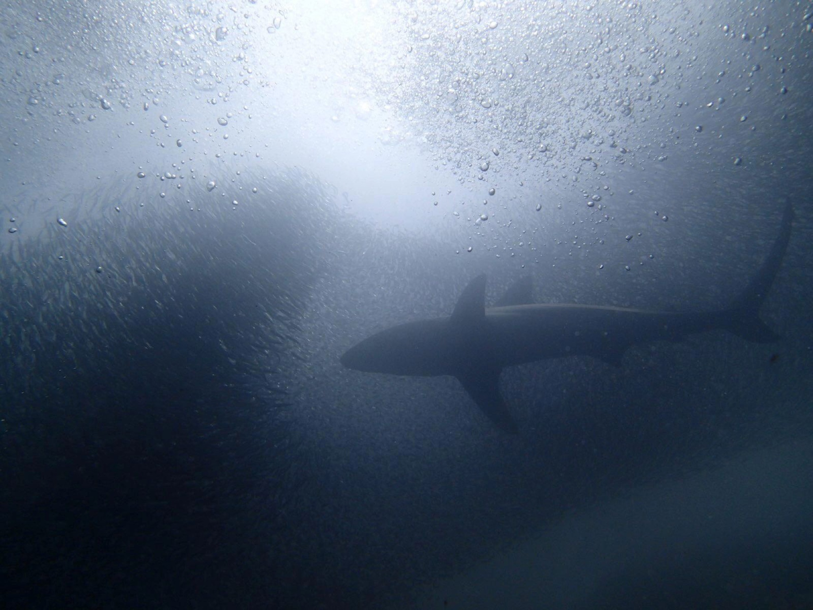
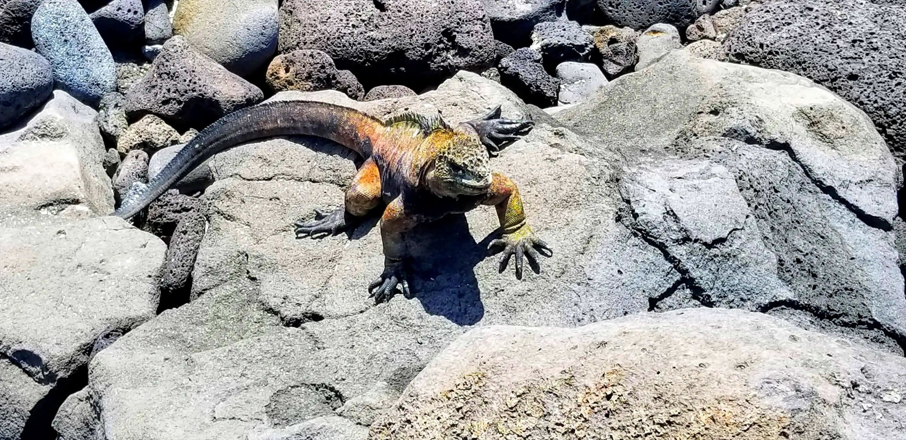
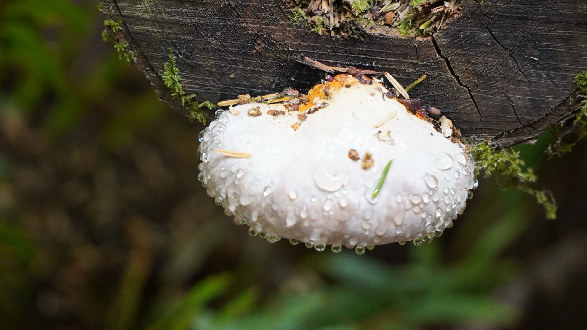
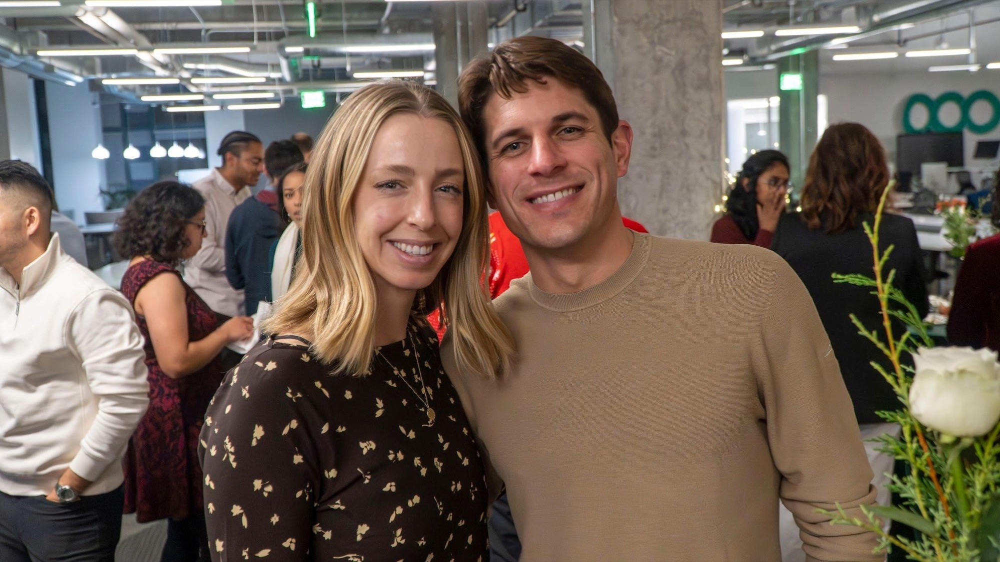
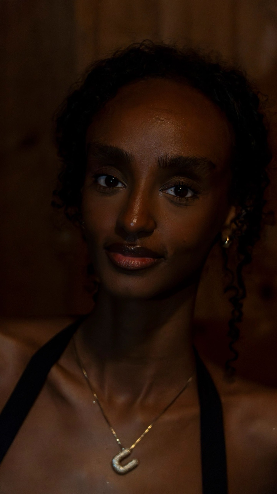
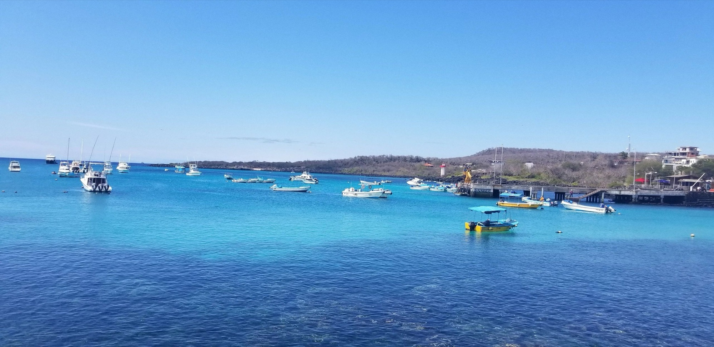
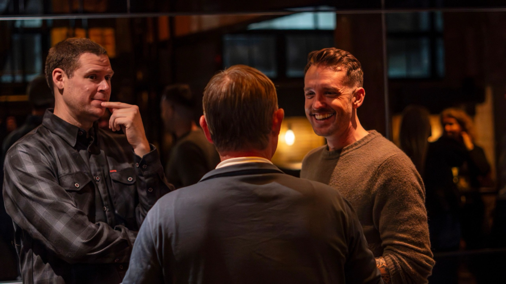
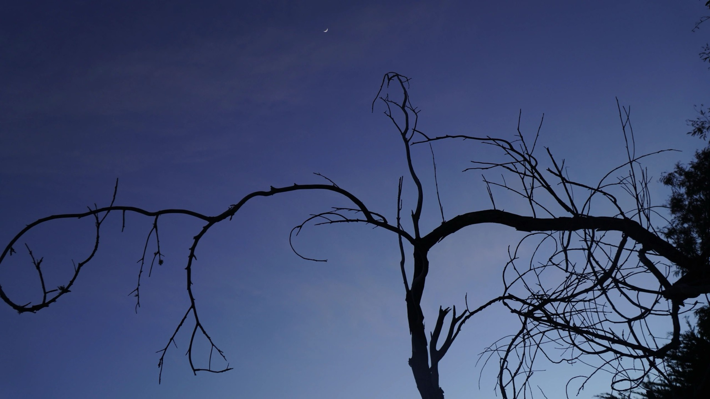
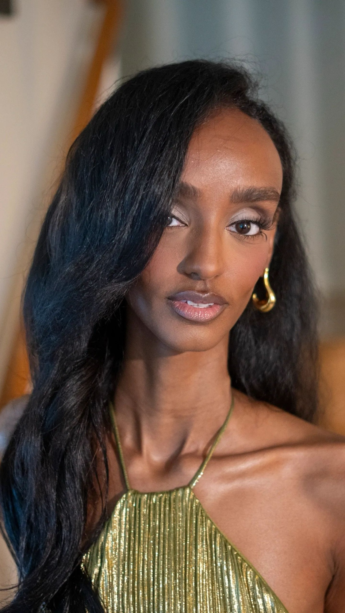
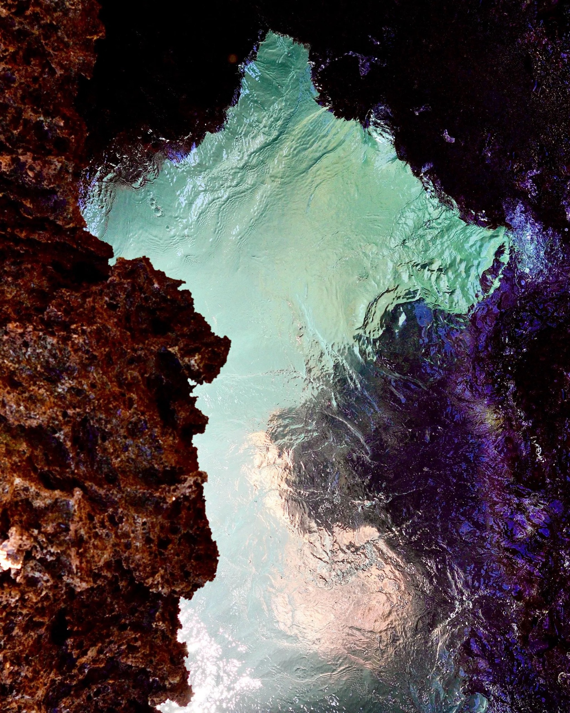

Ocean
Humpback Breach

Mountains
Fitz Roy, Alpenglow

Portraits
Window Portrait

Mountains
Fog Forest

Ocean
Sea Lion Pup

People
Field Notes at Sea

Ocean
Golden Gate, Fog

Mountains
Highland River

People
Scientist with Sample

Mountains
Winter Bark

Ocean
Shorebreak Boulders

People
Research Vessel, Dawn

Mountains
Banyan Light

Ocean
Blue-Footed Booby

Mountains
Misty Ridgeline

People
Peace, Skyline

Mountains
Conifer Canopy

Ocean
Paddler at the Gate

Mountains
Jungle Lily

People
City Thunderheads

Ocean
Reef Passage — Mirror I

Ocean
Reef Passage — Mirror II

Mountains
Rainier Afterglow

Ocean
Dusk Waterfowl

Mountains
Palm Canopy

Events
Gala Conversation

Ocean
Marine Iguana

Portraits
Executive Headshot

Events
The Keynote

Mountains
Forest Fungus

Events
Team Celebration

Portraits
Amber Portrait

Ocean
Turquoise Harbor

Events
Industry Mingle

Mountains
Dusk Branches

Portraits
Quiet Gaze

Events
Evening Reception

Ocean
Lava Pools — Mirror I

Ocean
Lava Pools — Mirror II

Mountains
Ember Study
No frames in this category yet — check back soon.